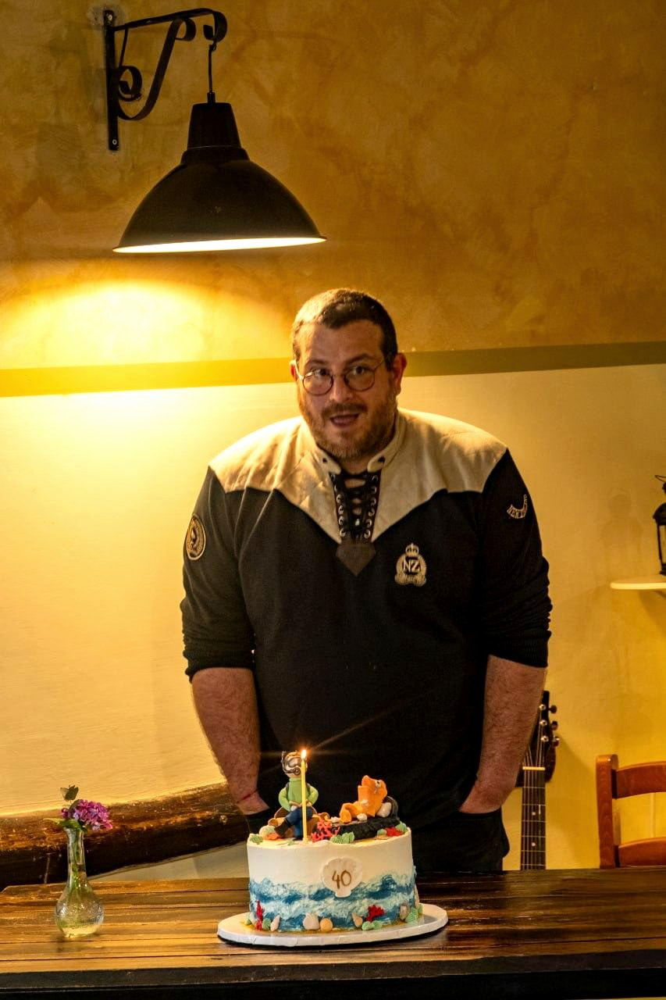

À propos
Le fonctionnement de l’esprit humain m’a toujours fasciné : comment nous pensons, comment nous réagissons, comment nous nous relevons. Je suis psychothérapeute d’orientation psychodynamique et, depuis de nombreuses années, je travaille aussi comme psychologue de l’urgence, auprès des secouristes et des populations touchées par des inondations et de grands événements critiques.
L’urgence m’a appris une chose que j’apporte chaque jour au cabinet : sous pression émergent les mécanismes les plus profonds de chacun de nous, ceux qui restent silencieux dans la vie de tous les jours. C’est là que la part la meilleure et la plus fragile d’une personne se rencontrent, et c’est là que l’on peut comprendre et changer vraiment.
Où j’ai appris à observer l’être humain
Pas seulement dans l’urgence. Au rugby, j’ai appris que ce qui compte n’est pas de tomber fort, mais de se relever, et que ce qui fait souvent la différence, c’est un coéquipier qui vous tend la main, parfois d’un simple regard. Sous l’eau, j’ai appris la valeur du souffle, de la maîtrise de soi et de celui qui est à vos côtés. En montagne, j’ai compris qu’il faut écouter sa limite, et que parfois le choix le plus fort est de faire demi-tour.
En thérapie, j’essaie d’être ce coéquipier : je ne joue pas le match à votre place, mais je suis là quand il faut se relever. Je crois en une psychothérapie qui aide à changer en restant soi-même : sans rien effacer de ce que l’on est, mais en apprenant à le faire mieux fonctionner. C’est un principe que j’ai aussi appris sur mon propre chemin. Tout choix cohérent a un prix, et il vaut la peine de le payer.
Je reçois dans mon cabinet à Rome, en italien, en anglais et en français.
Formation et expérience
- Psychologue clinicien et communautaire, inscrit à l’Ordre des psychologues du Latium, n° 19137 (depuis 2012)
- Spécialisation en psychothérapie psychanalytique de l’adulte et de l’enfant, SIRPIDI – ISTEBA, Rome (2016)
- Psychologue de l’urgence : interventions lors de grandes urgences, dont les inondations des Marches (2022) et d’Émilie-Romagne (2023) ; habilité à intervenir depuis un hélicoptère
- Formateur SIPEM pour les collègues qui s’initient à la psychologie de l’urgence ; séminaires pour la Protection civile et la SIPEM
- Membre du Comité technique et scientifique national de SIPEM SoS Federazione
- Enseignant et directeur de mémoires dans le master de psychologie de l’urgence du Consorzio Humanitas
- Concepteur de cinq exercices d’entraînement avec les sapeurs-pompiers volontaires du Trentin, à Lavarone
- Longue expérience dans le domaine du handicap
